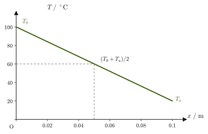
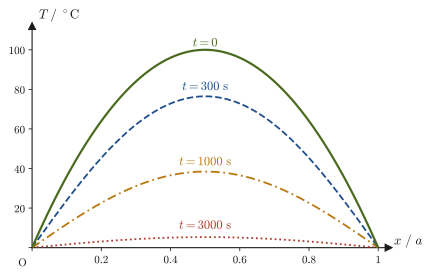

Chapter 33The Heat Conduction Equation
Even if we leave a metal spoon and a wooden spoon in the same place at room temperature, the metal one feels colder when we touch it with the hand. This is because metal “conducts heat well,” so the heat of the fingertip is quickly drawn away through the metal. But how can “conducting heat well” be expressed in a formula? If we heat one end of a rod and keep cooling the other, how does the temperature distribution inside the rod change with time, and what form does it finally settle into? In this chapter we derive the heat conduction equation, which answers these questions, by focusing on a small interval and counting “the heat that came in” and “the heat that went out” (just like keeping the books of income and expenditure), and then we actually solve it.
The heat conduction equation is a partial differential equation, containing derivatives with respect to both time and position, and it is of a different kind from the ordinary differential equations treated so far in this book (such as the equations of motion in mechanics, whose only independent variable is the time $t$). Yet the skeleton of the solution method is in fact very simple. If we use separation of variables—“look for a solution in the form of a product $T(x,t)=X(x)\,\Theta(t)$ of a function of position alone and a function of time alone”—the single partial differential equation splits into two familiar ordinary differential equations, one in $x$ alone and one in $t$ alone. Moreover, the ordinary differential equation on the $x$ side has exactly the same form as the equation of motion of a spring pendulum that we solved in Chapter 7, so the methods learned there can be reused as they are. When we add up (superpose) the infinitely many solutions obtained by separation of variables so as to fit the boundary conditions and initial conditions, the Fourier series learned in the companion volume “University Mathematics” (AD 02) plays the leading role—an arbitrary initial temperature distribution is represented as a superposition of simple waves of the form $\sin(n\pi x/a)$.
In this chapter, separation of variables, which we learned as a general procedure in Chapter 43 of the companion volume “University Mathematics” (AD 02), is applied for the first time to a real problem involving concrete physical quantities (thermal conductivity $\lambda$, specific heat $c$, density $\rho$). We hope you will get a feel here for “what the abstract solution method learned in AD 02 is actually computing.”
- Derive the one-dimensional heat conduction equation $\pdiff Tt=\kappa^2\pdiff{^2T}{x^2}$ ($\kappa^2$: thermal diffusivity) from Fourier's law of heat conduction and the balance of the quantity of heat in a small interval
- Find the steady state (a solution that does not depend on time) when the two ends are at different temperatures
- Use separation of variables to split the heat conduction equation into an ordinary differential equation in space and one in time, and determine, by cases, the forms of solution that the boundary conditions allow
- Use Fourier series to construct the superposition that satisfies the initial condition, and find how the temperature distribution relaxes with time (two concrete examples with different initial temperature distributions)
- Understand the property characteristic of diffusion phenomena that the higher-order terms of the Fourier series (modes of higher frequency) decay faster
Note on symbols: In this chapter we write $S$ for the cross-sectional area of the rod, $A,B$ for constants, $\alpha$ for the separation constant, and $\rho$ for the mass density. These are used with meanings different from those in other chapters on thermodynamics ($S$ is the entropy, $A$ is the Helmholtz energy, $\alpha$ is the coefficient of thermal expansion) and in the chapters on electromagnetism ($\rho$ is the charge density).
Source notes: Yasuhide Mochizuki, Physics Notes: Thermodynamics, pp. 63–68.
33.1 Derivation of the Heat Conduction Equation
Suppose a uniform rod (cable) of cross-sectional area $S\ [\mathrm{m^2}]$ is placed along the $x$ axis, and let the temperature of one end of the rod ($x=0$) be $T_0$ and that of the other end ($x=a$) be $T_a$. Here we take $T_0\gt T_a$, that is, the $x=0$ side is the hot side. You should also have learned in high school physics that “heat flows from high temperature to low temperature” and that “the quantity of heat conducted is proportional to the temperature difference and to the cross-sectional area, and inversely proportional to the thickness,” but here we turn this into a quantitative formula. We express the temperature distribution in the rod as a function $T(x,t)$ of the position $x$ and the time $t$ (Figure 33.1).
Suppose that a quantity of heat $Q$ flows through the cross-sectional area $S$ during a time $t$. Empirically, the following three proportionalities are known: the quantity of heat $Q$ is larger the longer the time $t$ during which the heat flows (if we leave it for twice as long, twice as much heat flows); it is larger the greater the cross-sectional area $S$ (a rod twice as thick carries twice as much heat); and it is larger the steeper the temperature gradient $\bigl|(T_a-T_0)/(a-0)\bigr|$ produced by the temperature difference between the two ends—in each case a linear proportionality. Combining these three, we obtain
$$ Q\ \propto\ t\cdot S\cdot\left|\frac{T_a-T_0}{a-0}\right| $$Now let $\lambda$ be the constant of proportionality (since $T_0\gt T_a$, we remove the absolute value and match the sign by writing the difference as $T_0-T_a$). We then obtain the relation
\begin{equation} Q=\lambda\cdot tS\cdot\frac{T_0-T_a}{a-0} \label{eq:33-macro-law} \end{equation}The constant $\lambda$ is called the thermal conductivity. Solving Eq. \eqref{eq:33-macro-law} for $\lambda$ gives $\lambda=Qa/\bigl(tS(T_0-T_a)\bigr)$, and its unit is $\mathrm{J\cdot m/(s\cdot m^2\cdot K)}=\mathrm{W/(m\cdot K)}$ (since $\mathrm{J/s}=\mathrm{W}$). The quantity of heat flowing per unit area per unit time, $Q/(St)\ [\mathrm{W/m^2}]$, is called the heat flux. Eq. \eqref{eq:33-macro-law} is a kind of averaged relation that assumes the special situation in which “the temperature distribution in the rod is a straight line (a uniform gradient) between the two ends” (in fact, the steady state that we find in Section 33.2 is exactly this case). For a general temperature distribution $T(x,t)$, which varies in both time and position, we assume that the following local law holds, in which the gradient $(T_a-T_0)/(a-0)$ is replaced by the local partial derivative $\partial T/\partial x$.
Math Tool: How to read the partial derivative symbol $\partial$
The temperature $T(x,t)$ is a function of two variables, the position $x$ and the time $t$. Differentiating a function of two or more variables “by moving only one variable and holding the others fixed” gives a partial derivative (University Mathematics, Section 6.2). The symbol $\partial$ (read “partial”) is a rounded version of $\dd$, and it indicates a derivative taken “with the other variables held fixed.”
- $\pdiff Tx$ (read “partial T partial x”): the rate of change of $T$ when we hold the time $t$ fixed and move only $x$. It is the slope of the graph of the temperature distribution at a given instant (the temperature gradient). Its unit is $\mathrm{K/m}$.
- $\pdiff Tt$: the rate of change of $T$ when we hold the position $x$ fixed and advance only the time. It tells us how fast the temperature at that place is rising. Its unit is $\mathrm{K/s}$.
- $\pdiff{^2T}{x^2}$: the result of partially differentiating $\pdiff Tx$ with respect to $x$ once more. It is the change in the slope of the graph, that is, how sharply the graph bends. Its unit is $\mathrm{K/m^2}$.
Law 33.1: Fourier's law of heat conduction
Let $T(x,t)$ be the temperature at position $x$ and time $t$ in a material. The heat flux $q(x,t)\ [\mathrm{W/m^2}]$ flowing in the positive $x$ direction (the quantity of heat flowing per unit area per unit time) is proportional to the temperature gradient $\partial T/\partial x$ at that point, and is given by
\begin{equation} q=-\lambda\,\pdiff Tx \label{eq:33-fourier-law} \end{equation}Here $\lambda\ [\mathrm{W/(m\cdot K)}]$ is a positive constant determined by the material, called the thermal conductivity. The minus sign is there because heat flows from the higher temperature to the lower. For example, at a place where the temperature decreases as $x$ increases ($\partial T/\partial x\lt0$), we have $q=-\lambda\,\partial T/\partial x\gt0$, so heat flows in the positive $x$ direction. Conversely, at a place where $\partial T/\partial x\gt0$, we have $q\lt0$, and heat flows in the negative $x$ direction—Eq. \eqref{eq:33-fourier-law} is the quantitative rewriting, in terms of the gradient, of what you learned in high school physics as “heat flows from high temperature to low temperature.”
Intuition: Why is it proportional to the gradient?
If we keep the cross-sectional area $S$ fixed and double the temperature difference between the two ends, the quantity of heat carried also roughly doubles—this is an empirical fact, and Fourier's law, Eq. \eqref{eq:33-fourier-law}, expresses this proportionality in local terms (the temperature difference across a small interval, that is, the gradient). The intuition that the steeper the gradient (the more a large temperature difference is squeezed into a narrow range), the faster the heat flows, is close to the picture that the steeper the slope, the faster an object rolls down it.
Now let us derive the heat conduction equation from Fourier's law, Eq. \eqref{eq:33-fourier-law}, and the law of conservation of heat (a kind of energy conservation law).
Assumptions of the derivation
We make the following three assumptions. (1) The lateral surface of the rod is thermally insulated, so heat flows only along the axis of the rod (the $x$ direction). (2) The thermal conductivity $\lambda$, the specific heat $c$, and the density $\rho$ are constant, independent of position. (3) There is no heat source (heat-generating body) in the rod. In a real rod, heat also escapes from the lateral surface into the air, but we do not consider that effect in this chapter (the case that includes the surrounding air can be explored with the related simulator).
Derivation: The heat conduction equation
Let an arbitrary position $x$ in the rod be point $\mathrm{A}$, and let the position $x+\dd x$, a small distance $\dd x$ away from it, be point $\mathrm{B}$ (Figure 33.1). Consider the cross sections passing through points $\mathrm{A}$ and $\mathrm{B}$. During a small time $\dd t$, let $\dd'Q_{\mathrm{A}}$ be the quantity of heat that flows through the cross section at $\mathrm{A}$ into the interval $[x,x+\dd x]$, and let $\dd'Q_{\mathrm{B}}$ be the quantity of heat that flows out through the cross section at $\mathrm{B}$ (the quantity of heat $Q$ is not a quantity determined by “what state the system is in now” but a quantity belonging to the process of heat transfer, so its infinitesimal quantity is written $\dd'Q$ rather than $\dd Q$; see Section 26.6). By Fourier's law, Eq. \eqref{eq:33-fourier-law}, both are given (since heat flux $\times$ area $\times$ time $=$ quantity of heat) by
$$ \dd'Q_{\mathrm{A}}=\lambda S\left(-\pdiff Tx\right)_{\!\mathrm{A}}\dd t,\qquad \dd'Q_{\mathrm{B}}=\lambda S\left(-\pdiff Tx\right)_{\!\mathrm{B}}\dd t $$Here, $(\ \cdot\ )_{\mathrm{A}}$ denotes “the quantity evaluated at point $\mathrm{A}$ (position $x$)” and $(\ \cdot\ )_{\mathrm{B}}$ denotes “the quantity evaluated at point $\mathrm{B}$ (position $x+\dd x$).” Since $\mathrm{B}$ is only a small distance $\dd x$ away from $\mathrm{A}$, a Taylor expansion of $(\partial T/\partial x)_{\mathrm{B}}$ about $(\partial T/\partial x)_{\mathrm{A}}$ (University Mathematics, Section 4.2) gives
$$ \left(\pdiff Tx\right)_{\!\mathrm{B}}=\left.\pdiff Tx\right|_{x+\dd x} \approx\left(\pdiff Tx\right)_{\!\mathrm{A}}+\left(\pdiff{^2T}{x^2}\right)_{\!\mathrm{A}}\dd x+\underbrace{\cdots}_{\dd x^2\text{ and higher, neglected}} $$Since $\dd x$ is infinitesimal, the terms of order $\dd x^2$ and higher can be neglected—this is a first-order approximation. Substituting this into the expression for $\dd'Q_{\mathrm{B}}$ gives
$$ \dd'Q_{\mathrm{B}}=-\lambda S\left[\left(\pdiff Tx\right)_{\!\mathrm{A}}+\left(\pdiff{^2T}{x^2}\right)_{\!\mathrm{A}}\dd x\right]\dd t $$Focus on the interval $[x,x+\dd x]$ (volume $S\,\dd x$). The net quantity of heat that this interval gains during the small time $\dd t$ is the “heat flowing in from $\mathrm{A}$” minus the “heat flowing out from $\mathrm{B}$,” so
$$ \dd'Q=\dd'Q_{\mathrm{A}}-\dd'Q_{\mathrm{B}} =\lambda S\left(-\pdiff Tx\right)_{\!\mathrm{A}}\dd t-\left\{-\lambda S\left[\left(\pdiff Tx\right)_{\!\mathrm{A}}+\left(\pdiff{^2T}{x^2}\right)_{\!\mathrm{A}}\dd x\right]\dd t\right\} $$The terms $-\lambda S(\partial T/\partial x)_{\mathrm{A}}\,\dd t$ on the right-hand side cancel each other, and only the following remains:
\begin{equation} \dd'Q=\lambda S\left(\pdiff{^2T}{x^2}\right)_{\!\mathrm{A}}\dd x\,\dd t \qquad\cdots\ ① \label{eq:33-dQ1} \end{equation}This is the net quantity of heat that the interval $[x,x+\dd x]$ receives during the small time $\dd t$. If more heat flows in than flows out ($\partial^2T/\partial x^2\gt0$), the interval gains heat. Checking the units, $\mathrm{W/(m\cdot K)}\times\mathrm{m^2}\times(\mathrm{K/m^2})\times\mathrm{m}\times\mathrm{s}=\mathrm{W\cdot s}=\mathrm{J}$, which is indeed the unit of a quantity of heat.
On the other hand, when this interval receives the quantity of heat $\dd'Q$, its internal energy (that is, its temperature) rises accordingly. Since the interval is thin, the temperature within it may be regarded as having the same value $T(x,t)$ everywhere. Let the density of the material be $\rho\ [\mathrm{kg/m^3}]$ and its specific heat be $c\ [\mathrm{J/(kg\cdot K)}]$. Then the mass of the interval is $\rho S\,\dd x$, and by the definition of specific heat (quantity of heat $=$ mass $\times$ specific heat $\times$ temperature change), the quantity of heat required to raise the temperature by $\dd T$ is given by
\begin{equation} \dd'Q=c\cdot\rho S\,\dd x\cdot\dd T \qquad\cdots\ ② \label{eq:33-dQ2} \end{equation}(The unit of the specific heat $c$ is $\mathrm{J/(kg\cdot K)}$—the heat capacity per 1 kg of mass.) Regarding $T$ as a function of the time $t$ and carrying out a Taylor expansion to first order, the temperature rise $\dd T$ of the interval from time $t$ to $t+\dd t$ can be written $\dd T\approx(\partial T/\partial t)\,\dd t$ (the rate of change of the temperature multiplied by $\dd t$). Since these are the quantities of heat flowing into and out of the same interval during the same time, ① and ② are equal:
$$ \lambda S\left(\pdiff{^2T}{x^2}\right)\dd x\,\dd t=c\rho S\,\dd x\cdot\pdiff Tt\,\dd t $$Canceling the factors $S$, $\dd x$, and $\dd t$ common to both sides gives
$$ \lambda\pdiff{^2T}{x^2}=c\rho\,\pdiff Tt $$and dividing both sides by $c\rho$ yields the following heat conduction equation:
\begin{equation} \pdiff Tt=\frac{\lambda}{c\rho}\,\pdiff{^2T}{x^2} \label{eq:33-heateq} \end{equation}∎
Intuition: Temperature changes according to the “curvature” of the graph
The right-hand side $\partial^2T/\partial x^2$ of Eq. \eqref{eq:33-heateq} is the degree of bending (the curvature) of the graph of the temperature distribution. Let us look at what this means, including its sign, in three cases. (1) The graph is concave up, a “valley” ($\partial^2T/\partial x^2\gt0$): that location is cooler than its surroundings, heat flows in from both neighbors, and the temperature rises. (2) The graph is concave down, a “peak” ($\partial^2T/\partial x^2\lt0$): that location is warmer than its surroundings, heat escapes to both neighbors, and the temperature falls. (3) The graph is a straight line ($\partial^2T/\partial x^2=0$): the heat coming in and the heat going out exactly balance, and the temperature does not change—this is the steady state that we find in Section 33.2. In short, the heat conduction equation expresses in a formula that “peaks are worn down, valleys are filled in, and the bumps in the temperature are smoothed out.” The sharper the bending (the larger the absolute value of $\partial^2T/\partial x^2$), the faster the smoothing proceeds.
The coefficient $\lambda/(c\rho)$ in Eq. \eqref{eq:33-heateq} is a quantity that expresses how fast the temperature is smoothed out in space, and we define it as follows.
Definition 33.1: Thermal diffusivity
$$ \kappa^2\equiv\frac{\lambda}{c\rho}\ \ [\mathrm{m^2/s}] $$is called the thermal diffusivity. Using it, the heat conduction equation, Eq. \eqref{eq:33-heateq}, can be written as
\begin{equation} \pdiff Tt=\kappa^2\,\pdiff{^2T}{x^2} \label{eq:33-heateq-kappa} \end{equation}Although $\kappa^2$ is written in a “squared” form, it is a single symbol (a single quantity), and $\kappa$ by itself has no separate meaning—it is a conventional notation that emphasizes, in the very appearance of the formula, that $\lambda/(c\rho)$ is always a positive quantity. Its dimension is $[\lambda]/([c][\rho])=\mathrm{(W/(m\cdot K))/((J/(kg\cdot K))\cdot(kg/m^3))=m^2/s}$, and indeed the dimension of the right-hand side $\kappa^2\,\partial^2T/\partial x^2$ is $\mathrm{m^2/s}\times\mathrm{K/m^2}=\mathrm{K/s}$, which agrees with the dimension ($\mathrm{K/s}$) of the left-hand side $\partial T/\partial t$.
Caution: On the symbol for the thermal conductivity
In this book, we write the thermal conductivity as $\lambda$. The symbol $K$ has already been used in Part III of this book for the bulk modulus (Chapter 19), and we avoid it here to prevent confusion. Note that some textbooks use $k$ or $\kappa$ for the thermal conductivity, but since this book uses $\kappa^2$ as the symbol for the thermal diffusivity $\lambda/(c\rho)$, we use $\lambda$ consistently for the thermal conductivity itself.
The values of the thermal conductivity $\lambda$ of several substances are given in Table 33.1. We see that metals have a large thermal conductivity (they conduct heat well), whereas gases and glass have a small thermal conductivity (they conduct heat poorly, that is, they are suited to thermal insulation)—this is the reason why a metal spoon “feels colder” than a wooden or glass spoon.
| Substance | Temperature $/\ {}^\circ\mathrm{C}$ | $\lambda\ /\ \mathrm{W\,m^{-1}\,K^{-1}}$ |
|---|---|---|
| Water | 10 | 0.58 |
| Ice | 0 | 2.2 |
| Aluminum | 0 | 236 |
| Iron (Fe) | 0 | 83.5 |
| Copper (Cu) | 0 | 403 |
| Silver (Ag) | 0 | 428 |
| Air | 0 | 0.0241 |
| Glass | room temperature | 0.55–0.75 |
Caution: The thermal diffusivity is not determined by the thermal conductivity alone
As the formula $\kappa^2=\lambda/(c\rho)$ shows, how fast a temperature distribution is smoothed out (the thermal diffusivity $\kappa^2$) depends not only on the thermal conductivity $\lambda$ but also on the specific heat $c$ and the density $\rho$. The denominator $c\rho$ (unit $\mathrm{J/(m^3\cdot K)}$) is the quantity of heat required to raise the temperature of $1\ \mathrm{m^3}$ of the substance by $1\ \mathrm{K}$, that is, the heat capacity per unit volume. The smaller the volumetric heat capacity $c\rho$ of the medium (the smaller the density or the specific heat), the more easily the temperature rises for the same quantity of heat, and so the higher the thermal diffusivity—“conducting heat well (large $\lambda$)” and “having the temperature smoothed out quickly (large $\kappa^2$)” are similar but do not mean the same thing. Example 33.3 confirms this difference concretely.
Example 33.1: Ratio of the heat fluxes through copper and glass
A copper plate and a glass plate of the same thickness and the same cross-sectional area are brought to a steady state with the same temperature difference between their two faces. Using the values in Table 33.1 (copper $\lambda_{\mathrm{Cu}}=403\ \mathrm{W/(m\cdot K)}$, glass $\lambda_{\text{glass}}=0.60\ \mathrm{W/(m\cdot K)}$, adopting an intermediate value within the range given in the table), find how many times larger the heat flux through the copper is than the heat flux through the glass.
Solution. In the steady state, the heat flux $q=Q/(St)=\lambda(T_0-T_a)/a$ of Eq. \eqref{eq:33-macro-law} is proportional to the thermal conductivity $\lambda$. Since the thickness $a$ and the temperature difference $T_0-T_a$ are common to both plates, the ratio of the heat fluxes is simply the ratio of the thermal conductivities:
$$ \frac{q_{\mathrm{Cu}}}{q_{\text{glass}}}=\frac{\lambda_{\mathrm{Cu}}}{\lambda_{\text{glass}}}=\frac{403}{0.60}\approx 6.7\times10^{2} $$Thus, even with the same temperature difference and the same thickness, the heat flowing through the copper is as much as about 670 times that through the glass. If we use the range of the thermal conductivity of glass in Table 33.1 ($0.55$–$0.75\ \mathrm{W/(m\cdot K)}$), this ratio varies between about 540 and 730 times.
Example 33.2: Heat escaping through a window glass
A window glass of thickness $d=3.0\ \mathrm{mm}$ and area $S=1.5\ \mathrm{m^2}$ ($\lambda=0.60\ \mathrm{W/(m\cdot K)}$) is in a steady state, with a temperature difference of $10\ \mathrm{K}$ maintained between its two faces. Find (1) the heat flux $q$ through the glass and (2) the quantity of heat $P$ that escapes per unit time through the whole window.
Solution. (1) In the heat flux $q=Q/(St)=\lambda(T_0-T_a)/a$ of Eq. \eqref{eq:33-macro-law}, read the thickness $a$ as $d$. Since $d=3.0\ \mathrm{mm}=3.0\times10^{-3}\ \mathrm{m}$,
$$ q=\lambda\,\frac{\Delta T}{d}=0.60\ \mathrm{W/(m\cdot K)}\times\frac{10\ \mathrm{K}}{3.0\times10^{-3}\ \mathrm{m}}=2.0\times10^{3}\ \mathrm{W/m^2} $$(the unit is $\mathrm{W/(m\cdot K)}\times\mathrm{K/m}=\mathrm{W/m^2}$, which agrees with the unit of the heat flux). (2) Since the heat flux is a quantity per unit area, multiplying it by the area gives
$$ P=qS=2.0\times10^{3}\ \mathrm{W/m^2}\times1.5\ \mathrm{m^2}=3.0\times10^{3}\ \mathrm{W}=3.0\ \mathrm{kW} $$This is the value for the case in which the temperature difference between the glass surfaces is really maintained at $10\ \mathrm{K}$. In an actual window, a very thin layer of air in contact with the glass surface greatly impedes the flow of heat, so the temperature difference between the two faces of the glass itself is much smaller, and the heat that escapes is also much smaller than this value.
Example 33.3: Comparison of thermal diffusivities — copper and glass
Calculate the thermal diffusivities $\kappa^2=\lambda/(c\rho)$ of copper ($\lambda_{\mathrm{Cu}}=403\ \mathrm{W/(m\cdot K)}$, density $\rho_{\mathrm{Cu}}\approx8960\ \mathrm{kg/m^3}$, specific heat $c_{\mathrm{Cu}}\approx385\ \mathrm{J/(kg\cdot K)}$, all typical values) and of glass ($\lambda_{\text{glass}}\approx0.60\ \mathrm{W/(m\cdot K)}$, $\rho_{\text{glass}}\approx2500\ \mathrm{kg/m^3}$, $c_{\text{glass}}\approx840\ \mathrm{J/(kg\cdot K)}$, all typical values), and answer which of the two smooths out a temperature distribution faster.
Solution. First we find the volumetric heat capacities $c\rho$:
$$ c_{\mathrm{Cu}}\rho_{\mathrm{Cu}}=385\times8960\approx3.45\times10^{6}\ \mathrm{J/(m^3\cdot K)},\qquad c_{\text{glass}}\rho_{\text{glass}}=840\times2500=2.10\times10^{6}\ \mathrm{J/(m^3\cdot K)} $$By Definition 33.1,
$$ \kappa^2_{\mathrm{Cu}}=\frac{\lambda_{\mathrm{Cu}}}{c_{\mathrm{Cu}}\rho_{\mathrm{Cu}}}=\frac{403}{385\times8960}\approx1.17\times10^{-4}\ \mathrm{m^2/s} $$ $$ \kappa^2_{\text{glass}}=\frac{\lambda_{\text{glass}}}{c_{\text{glass}}\rho_{\text{glass}}}=\frac{0.60}{840\times2500}\approx2.9\times10^{-7}\ \mathrm{m^2/s} $$Taking the ratio gives $\kappa^2_{\mathrm{Cu}}/\kappa^2_{\text{glass}}\approx4.1\times10^{2}$, so the thermal diffusivity of copper is about 400 times that of glass. Note that the ratio of the thermal conductivities (about 670 in Example 33.1) and the ratio of the thermal diffusivities (about 410) are different values—glass does have a larger specific heat than copper ($840$ versus $385\ \mathrm{J/(kg\cdot K)}$), but its density is only about three tenths of that of copper, and its volumetric heat capacity $c\rho$ is about $0.61$ times that of copper ($2.10\times10^6$ versus $3.45\times10^6$). Because glass has the smaller $c\rho$, its temperature changes more readily, and the ratio of the thermal diffusivities is about 410, smaller than the ratio of the $\lambda$ values (670). In other words, “how much heat a material conducts ($\lambda$)” and “how fast a temperature distribution is smoothed out ($\kappa^2$)” are different quantities, and the latter also depends on the volumetric heat capacity $c\rho$ (see the preceding Caution).
33.2 The Steady-State Solution — When the Two Ends Are at Different Temperatures
Let us now actually solve the heat equation, Eq. \eqref{eq:33-heateq-kappa}. As the simplest case, we first consider the situation in which the temperatures at the two ends of a rod are kept constant for all time. Suppose that one end of the rod is kept in contact with a heat reservoir at temperature $T_0$ and the other end with a heat reservoir at temperature $T_a$, and that a sufficiently long time has passed. Then the temperature at every point of the rod no longer changes with time—this is called the steady state.
Problem Setup 33.1: Boundary conditions for the steady state
The temperatures at the two ends of the rod are kept at
$$ T(0,t)=T_0,\qquad T(a,t)=T_a\qquad(T_0\gt T_a) $$respectively (hereafter, as with $T_0,T_a$ in Section 33.1, we write $T_0$ for the temperature of the end at $x=0$ and $T_a$ for the temperature of the end at $x=a$). Since we consider a state in which the temperature distribution does not depend on time (the steady state), the condition
$$ \pdiff Tt=0 $$holds.
Derivation: Temperature distribution in the steady state
In the steady state $\partial T/\partial t=0$, so the left-hand side of the heat equation, Eq. \eqref{eq:33-heateq-kappa}, becomes 0. Since $\kappa^2\neq0$, the right-hand side $\partial^2T/\partial x^2$ must also be 0:
$$ \pdiff{^2T}{x^2}=0 $$In the steady state $T$ does not depend on the time $t$, so $T=T(x)$ is a function of $x$ alone, and the equation above is the same as the ordinary differential equation $\dd^2T/\dd x^2=0$. Integrating this twice, we obtain
$$ T(x)=Ax+B\qquad(A,B:\text{constants of integration}) $$which is a linear function (a straight line). Substituting the boundary conditions $T(0)=T_0,\ T(a)=T_a$, we have $T(0)=B=T_0$ and $T(a)=Aa+T_0=T_a$, from which $A=(T_a-T_0)/a$. Therefore,
\begin{equation} T(x)=\frac{T_a-T_0}{a}\,x+T_0 \label{eq:33-steady} \end{equation}∎
Theorem 33.1: Steady state with different end temperatures
If the two ends of a rod are kept at temperatures $T_0$ (at $x=0$) and $T_a$ (at $x=a$, $T_0\gt T_a$) and a sufficiently long time passes, the temperature distribution in the rod settles into the time-independent straight line
\begin{equation} T(x)=T_0+\frac{T_a-T_0}{a}\,x \label{eq:33-steady-thm} \end{equation}This is the high school physics picture that “heat flows from high temperature to low temperature,” derived from the equation for a uniform rod; the temperature falls at a constant rate (the gradient) with position.

Intuition: The heat flux is constant in the steady state
Applying Fourier's law, Eq. \eqref{eq:33-fourier-law}, to the temperature distribution in Eq. \eqref{eq:33-steady-thm}, the heat flux is $q=-\lambda\,\dd T/\dd x=\lambda(T_0-T_a)/a$, which is constant, independent of the position $x$. This is only natural: if the heat flux differed from place to place, then in some interval the “heat coming in” and the “heat going out” would not balance, and the temperature of that interval would change with time—and then the state would not be a steady state. The steady state is precisely “the state in which the heat flux is the same everywhere and the heat entering and leaving each small interval is perfectly balanced.”
Example 33.4: Calculating the temperature distribution in the steady state
The two ends of a rod of length $a=0.10\ \mathrm{m}$ are kept at $T_0=100\ {}^\circ\mathrm{C}$ and $T_a=20\ {}^\circ\mathrm{C}$, respectively. Find the temperature at the midpoint of the rod ($x=a/2$) when the steady state is reached.
Solution. Substituting $x=a/2$ into Eq. \eqref{eq:33-steady-thm} gives
$$ T\!\left(\frac a2\right)=T_0+\frac{T_a-T_0}{a}\cdot\frac a2=T_0+\frac{T_a-T_0}{2}=\frac{T_0+T_a}{2} $$This result is peculiar to a linear temperature distribution: the temperature at the midpoint is exactly the average of the temperatures at the two ends. Substituting the numerical values, we obtain
$$ T\!\left(\frac a2\right)=\frac{100+20}{2}=60\ {}^\circ\mathrm{C} $$Note that this result does not depend at all on the material of the rod ($\lambda,c,\rho$)—the “shape” of the steady state (being a straight line) does not depend on the thermal conductivity and the like, and is determined by the boundary conditions alone. What the thermal conductivity does affect is “how quickly the rod settles into this steady state” (the time required for relaxation) and “how much heat flux is flowing at that time”; these appear in the time-dependent solutions that we study from Section 33.3 onward.
33.3 Separation of Variables and Fourier Series — When the Initial Temperature Distribution Is Given, Case 1
The steady state found in Section 33.2 was the temperature distribution “after a sufficiently long time.” Now, if we give some temperature distribution at the beginning (at time $t=0$), what happens in the intermediate time evolution from there until the steady state is reached? In this section, we keep both ends of the rod at $0\ {}^\circ\mathrm{C}$ at all times and consider the case in which the temperature distribution at time $t=0$ is a mountain-shaped (parabolic) distribution that is highest at the center.
Problem Setup 33.2: When the initial temperature distribution is given, Case 1
Boundary conditions (both ends of the rod are always kept at $0\ {}^\circ\mathrm{C}$):
$$ T(0,t)=0\ {}^\circ\mathrm{C},\qquad T(a,t)=0\ {}^\circ\mathrm{C}\qquad(\text{for all }t\ge0\text{ }) $$Initial condition (the temperature distribution at time $t=0$):
$$ T(x,0)=\frac{4}{a^2}\,T_0\,x(a-x) $$This initial condition is a parabolic distribution that is $0$ at $x=0,a$ and takes its maximum value $T_0$ at the midpoint $x=a/2$ (indeed, substituting $x=a/2$ gives $\frac{4}{a^2}T_0\cdot\frac a2\cdot\frac a2=T_0$); it is the curve for $t=0$ in Figure 33.4. Physically, it represents a situation in which only the center of the rod is heated locally and then both ends are fixed at $0\ {}^\circ\mathrm{C}$ with ice water or the like (in this section, $T_0$ is the maximum temperature, not “the temperature of the end at $x=0$” as in Section 33.2).
To solve this problem, we use separation of variables: we look for a solution $T(x,t)$ under the assumption that it can be written in the special form of a product of a “function of $x$ alone” and a “function of $t$ alone,”
$$ T(x,t)=X(x)\,\Theta(t) $$Here $\Theta(t)$ (capital theta) is a function of time alone, and is a different function from the temperature $T(x,t)$ itself (to avoid confusion, we use $\Theta$ rather than $T$ for the time part). It is not necessarily true that every solution has this form, but as we will see later, by superposing solutions of this form we can build the general solution that satisfies an arbitrary initial condition—this is the same as the general procedure described in University Mathematics, Section 43.6. Substituting this into the heat equation, Eq. \eqref{eq:33-heateq-kappa}, we obtain
$$ X(x)\,\dot\Theta(t)=\kappa^2\,X''(x)\,\Theta(t) $$(here $\dot\Theta=\dd\Theta/\dd t$ and $X''=\dd^2X/\dd x^2$—since $X$ is a function of $x$ alone and $\Theta$ is a function of $t$ alone, these are ordinary derivatives, not partial derivatives). Dividing both sides by $\kappa^2 X(x)\Theta(t)$, we get
\begin{equation} \frac{1}{\kappa^2}\frac{\dot\Theta}{\Theta}=\frac{X''}{X} \label{eq:33-sep} \end{equation}What is decisively important here is that the left-hand side of Eq. \eqref{eq:33-sep} is a function of the time $t$ alone (it contains no $x$) and the right-hand side is a function of the position $x$ alone (it contains no $t$). Since the two sides must always be equal however the independent variables $x,t$ are varied, their common value can be nothing other than “one and the same constant that depends on neither $x$ nor $t$.” Let us denote this constant by $\alpha$:
\begin{equation} \frac{1}{\kappa^2}\frac{\dot\Theta}{\Theta}=\frac{X''}{X}=\alpha\qquad(\alpha:\text{constant}) \label{eq:33-alpha} \end{equation}Thus the single partial differential equation has been decomposed into two (more tractable) ordinary differential equations: the ordinary differential equation $\dot\Theta=\kappa^2\alpha\Theta$ for $\Theta(t)$ and the ordinary differential equation $X''=\alpha X$ for $X(x)$. This is the heart of separation of variables. Figure 33.3 summarizes the whole procedure so far and the procedure we will follow from here—the flow is: split into cases by the boundary conditions, superpose as a Fourier series, and finally determine the coefficients from the initial condition.
The form of the solution of the equation $X''-\alpha X=0$ for $X$ changes greatly depending on the sign of $\alpha$—this is a problem with exactly the same structure as solving the equation of motion $m\ddot x+kx=0$ of the spring pendulum in Chapter 7 (only the independent variable has changed from the time $t$ to the position $x$). Under the boundary conditions $X(0)=X(a)=0$ (since the temperatures at both ends of the rod are always $0$, for $T(0,t)=X(0)\Theta(t)=0$ to hold for all $t$ we must have $X(0)=0$; the same holds for $X(a)=0$), let us examine each sign of $\alpha$ in turn.
Derivation: Case analysis of $\alpha$ under the boundary conditions
[i] The case $\alpha\gt0$. The characteristic equation of $X''=\alpha X$ (where $\alpha=(\sqrt\alpha\,)^2\gt0$) is $\mu^2=\alpha$, that is, $\mu=\pm\sqrt\alpha$ (real numbers), so the general solution is
$$ X(x)=Ae^{\sqrt\alpha x}+Be^{-\sqrt\alpha x} $$Substituting the boundary conditions $X(0)=0,\ X(a)=0$, we obtain
$$ \begin{cases}A+B=0\\Ae^{\sqrt\alpha a}+Be^{-\sqrt\alpha a}=0\end{cases} \qquad\Longleftrightarrow\qquad \begin{bmatrix}1&1\\e^{\sqrt\alpha a}&e^{-\sqrt\alpha a}\end{bmatrix}\begin{bmatrix}A\\B\end{bmatrix}=\begin{bmatrix}0\\0\end{bmatrix} $$This is a system of simultaneous linear equations (of homogeneous form) in $A,B$. The determinant of this matrix is $e^{-\sqrt\alpha a}-e^{\sqrt\alpha a}$. If this is not $0$, then, since a square matrix whose determinant is not $0$ has an inverse matrix (University Mathematics, Section 9.1), we have
$$ \begin{bmatrix}A\\B\end{bmatrix}=\frac{1}{e^{-\sqrt\alpha a}-e^{\sqrt\alpha a}}\begin{bmatrix}e^{-\sqrt\alpha a}&-1\\-e^{\sqrt\alpha a}&1\end{bmatrix}\begin{bmatrix}0\\0\end{bmatrix}=\begin{bmatrix}0\\0\end{bmatrix} $$and only $A=B=0$ results ($X\equiv0$, the meaningless solution in which the temperature is identically 0 at every $x$). For a meaningful solution (one that is not identically 0) to exist, the determinant must be $0$:
$$ e^{-\sqrt\alpha a}-e^{\sqrt\alpha a}=0\quad\Longrightarrow\quad e^{2\sqrt\alpha a}=1\quad\Longrightarrow\quad e^{\sqrt\alpha a}=\pm1 $$Since $\sqrt\alpha a\gt0$, we have $e^{\sqrt\alpha a}\gt1\gt0$, and $e^{\sqrt\alpha a}=+1$ holds only when $\sqrt\alpha a=0$, that is, only when $\alpha=0$. But this contradicts the assumption $\alpha\gt0$ that we are making here. Therefore, in the range $\alpha\gt0$ the determinant is never $0$, and only $X(x)\equiv0$ (the trivial, identically zero solution) exists. Since a temperature distribution that is identically 0 is not a physically meaningful solution, $\alpha\gt0$ cannot be adopted.
(The same conclusion can be reached without matrices. From the first equation, $B=-A$. Substituting this into the second equation gives $A\bigl(e^{\sqrt\alpha a}-e^{-\sqrt\alpha a}\bigr)=0$. If $\sqrt\alpha a\gt0$, then $e^{\sqrt\alpha a}\gt e^{-\sqrt\alpha a}$, so the quantity in parentheses is a positive number and not $0$; hence $A=0$, and therefore $B=-A=0$.)
[ii] The case $\alpha=0$. From $X''=0$ we get $X(x)=Ax+B$ (a linear function). From the boundary conditions $X(0)=B=0$ and $X(a)=Aa+B=Aa=0$ ($A=0$ because $a\neq0$), we again obtain $X(x)\equiv0$, so only the trivial solution is allowed.
[iii] The case $\alpha\lt0$. We write $\alpha$ as $\alpha=-\omega^2$ ($\omega\gt0$) (this is a notational device to make later steps clearer). The equation $X''=-\omega^2X$, that is, $X''+\omega^2X=0$, has exactly the same form as the equation of motion $m\ddot x+kx=0$ of the spring pendulum in Chapter 7 (read $\omega^2=k/m$ and replace the independent variable $t$ by $x$). In Chapter 7 the root of the characteristic equation was written $\lambda$, but in this chapter $\lambda$ is the thermal conductivity, so we write the root as $\mu$. From the solutions $\mu=\pm i\omega$ (purely imaginary) of the characteristic equation $\mu^2+\omega^2=0$, the general solution is
$$ X(x)=A\cos\omega x+B\sin\omega x $$From the boundary condition $X(0)=0$, we get $X(0)=A\cos0+B\sin0=A=0$. Substituting $A=0$ into the remaining boundary condition $X(a)=0$, we obtain
$$ X(a)=B\sin\omega a=0 $$If $B=0$, then $X\equiv0$ (the trivial solution), so to obtain a meaningful solution we must have $B\neq0$, and for this to be possible we need
$$ \sin\omega a=0\quad\text{that is,}\quad \omega a=n\pi\qquad(n=0,\pm1,\pm2,\ldots) $$Here, $n$ and $-n$ give the same $\omega=|n|\pi/a$ (since we took $\omega\gt0$, it suffices to take the absolute value), and $\sin(-n\pi x/a)=-\sin(n\pi x/a)$ merely reverses the sign, which can be absorbed into the coefficient $B$ multiplied in later, so we do not count it as an independent solution. Also, $n=0$ would return us to $\omega=0$, that is, $\alpha=0$ (the case already found in [ii] to admit only the trivial solution). Therefore, among the nonnegative integers, only $n\ge1$ gives a meaningful solution; that is, the only allowed values are
$$ \omega=\frac{n\pi}{a}\qquad(n=1,2,3,\ldots) $$the infinitely many values of $\omega$ labeled by the positive integer $n$.
∎
Why do we need to split into three cases?
This case division has exactly the same mathematical structure as the “three cases according to the discriminant of the characteristic equation of a second-order homogeneous differential equation with constant coefficients” that we learned in University Mathematics, Section 35.5. The characteristic equation of $X''-\alpha X=0$ is $\mu^2-\alpha=0$, and the sign of $\alpha$ corresponds directly to the sign of the discriminant: if $\alpha\gt0$ there are two distinct real roots (a pair of exponential functions); if $\alpha=0$ there is a double root $\mu=0$ (the pair $1,x$); and if $\alpha\lt0$ there are conjugate purely imaginary roots (the pair $\cos,\sin$). The boundary condition $X(0)=X(a)=0$, that is, the constraint of “zero at both ends,” cannot be satisfied by exponential functions or linear functions (if such a function is made zero at one end, then at the other end it either takes a nonzero value or is identically zero), but the periodic function $\sin$ can satisfy it, by choosing the wavelength so that an integer multiple of the half wavelength fits exactly within the rod length $a$—the same reasoning as why a guitar string with both ends fixed can vibrate only at particular frequencies (the natural frequencies) (Section 17.3, “normal modes of a string fixed at both ends”).
Write the solutions found in [iii] for each $n$ as $X_n(x)=B_n\sin(n\pi x/a)$ and superpose them (using the principle of superposition: the sum of solutions of a linear equation is again a solution):
\begin{equation} X(x)=\sum_{n=1}^{\infty}B_n\sin\frac{n\pi}{a}x \label{eq:33-Xsum} \end{equation}This is nothing other than the Fourier series expansion (University Mathematics, Chapter 28), which expresses an arbitrary function as an infinite sum of the basis functions $\sin(n\pi x/a)$. On the other hand, substituting $\alpha=-n^2\pi^2/a^2$ (determined for each $n$) into Eq. \eqref{eq:33-alpha} turns the equation on the $\Theta(t)$ side into
$$ \frac{\dot\Theta}{\Theta}=\kappa^2\alpha=-\frac{n^2\pi^2\kappa^2}{a^2} $$a first-order linear differential equation. This is a first-order differential equation of separable form; integrating both sides with respect to $t$ gives $\ln\Theta=-n^2\pi^2\kappa^2t/a^2+\text{(constant)}$, and exponentiating gives
$$ \Theta(t)=Ce^{-n^2\pi^2\kappa^2t/a^2} $$(The constant $C$ can be absorbed into the coefficient $B_n$ on the $X_n(x)$ side, so we may take $C=1$.) Summarizing the above, the general solution that satisfies the heat equation, Eq. \eqref{eq:33-heateq-kappa}, under the boundary conditions $T(0,t)=T(a,t)=0$ has the form
\begin{equation} T(x,t)=\sum_{n=1}^{\infty}B_n\,e^{-n^2\pi^2\kappa^2t/a^2}\sin\frac{n\pi}{a}x \label{eq:33-Tsum} \end{equation}The only remaining task is to determine the coefficients $B_n$ so as to satisfy the initial condition $T(x,0)=\frac{4}{a^2}T_0x(a-x)$.
Math Tool: The coefficient formula for the Fourier sine series (why the factor $2/a$ appears)
Suppose a function $f(x)$ defined on the interval $0\le x\le a$ can be written as $f(x)=\sum_{n=1}^\infty B_n\sin(n\pi x/a)$. Then the coefficients $B_n$ are determined as follows. First, we compute the integral of a product of two $\sin$ functions (orthogonality) using the product-to-sum formula $\sin\theta\sin\varphi=\frac12\{\cos(\theta-\varphi)-\cos(\theta+\varphi)\}$:
$$ \int_0^a\sin\frac{n\pi x}{a}\sin\frac{m\pi x}{a}\,\dd x=\frac12\int_0^a\left\{\cos\frac{(n-m)\pi x}{a}-\cos\frac{(n+m)\pi x}{a}\right\}\dd x $$If $n\neq m$ (both positive integers), integrating $\cos(k\pi x/a)$ ($k$ a nonzero integer) from $0$ to $a$ gives $\bigl[\frac{a}{k\pi}\sin(k\pi x/a)\bigr]_0^a=0$, so the right-hand side is $0$. If $n=m$, the first term becomes $\cos0=1$, giving $\frac12\cdot a$, and the second term is $0$, so
$$ \int_0^a\sin\frac{n\pi x}{a}\sin\frac{m\pi x}{a}\,\dd x=\frac a2\,\delta_{nm}\qquad(\delta_{nm}:n=m\text{ gives }1,\ n\neq m\text{ gives }0) $$Now multiply both sides of $f(x)=\sum_nB_n\sin(n\pi x/a)$ by $\sin(m\pi x/a)$ and integrate from $0$ to $a$. On the right-hand side only the term with $n=m$ survives, giving $B_m\cdot a/2$. Hence
$$ B_m=\frac2a\int_0^af(x)\sin\frac{m\pi x}{a}\,\dd x $$(The factor $2/a$ is the reciprocal of $a/2$, the value of the integral of $\sin^2$.) Incidentally, if a function on the interval $[0,a]$ is “extended with period $2a$ as an odd function that vanishes at $x=0,a$,” it can be expressed by a series consisting of $\sin$ terms alone (the Fourier sine series of University Mathematics, Section 28.3). Since the temperature distribution in this chapter is $0$ at both ends, this expansion can be used as it is.
Math Tool: $\int_0^a x\sin\dfrac{n\pi}{a}x\,\dd x$ and $\int_0^a x^2\sin\dfrac{n\pi}{a}x\,\dd x$
To compute the Fourier coefficients we need the definite integrals of $x\sin(cx)$ and $x^2\sin(cx)$ ($c=n\pi/a$). Both can be obtained by using repeatedly the integration by parts that we learned in high school mathematics (Mathematics III, a course in the Japanese high-school curriculum). Setting $u'=\sin(cx),\ v=x$ (for the first) or $v=x^2$ (for the second) in $\int u'v\,\dd x=uv-\int uv'\,\dd x$, we obtain
$$ \int x\sin(cx)\,\dd x=\frac{\sin(cx)}{c^2}-\frac{x\cos(cx)}{c}+C,\qquad \int x^2\sin(cx)\,\dd x=\frac{2x}{c^2}\sin(cx)+\left(\frac{2}{c^3}-\frac{x^2}{c}\right)\cos(cx)+C $$(The latter requires integration by parts once more—write $\int x^2\sin(cx)\dd x=-x^2\cos(cx)/c+\frac2c\int x\cos(cx)\dd x$, and then find $\int x\cos(cx)\dd x$ by a further integration by parts.) Substitute $x=a$ and $x=0$ into these and take the difference. Since $c=n\pi/a$, we have $ca=n\pi$, $\sin(n\pi)=0$, and $\cos(n\pi)=(-1)^n$. For the first integral, the value is $0-\dfrac{a}{c}(-1)^n$ at $x=a$ and $0$ at $x=0$, so, using $\dfrac ac=\dfrac{a^2}{n\pi}$, we obtain
\begin{equation} \int_0^ax\sin\frac{n\pi}{a}x\,\dd x=\frac{a^2}{n\pi}(-1)^{n+1} \label{eq:33-intx} \end{equation}For the second integral, the value is $0+\Bigl(\dfrac{2}{c^3}-\dfrac{a^2}{c}\Bigr)(-1)^n$ at $x=a$ and $0+\dfrac{2}{c^3}$ at $x=0$, so the difference is $\dfrac{2}{c^3}\bigl\{(-1)^n-1\bigr\}-\dfrac{a^2}{c}(-1)^n$. Substituting $c=n\pi/a$ gives $\dfrac{2}{c^3}=\dfrac{2a^3}{n^3\pi^3}$ and $\dfrac{a^2}{c}=\dfrac{a^3}{n\pi}$, so
\begin{equation} \int_0^ax^2\sin\frac{n\pi}{a}x\,\dd x=\frac{a^3}{n\pi}(-1)^{n+1}-\frac{2a^3}{n^3\pi^3}\bigl\{1-(-1)^n\bigr\} \label{eq:33-intx2} \end{equation}is obtained in closed form.
Derivation: Computing the Fourier coefficients $B_n$
According to the coefficient formula for the Fourier sine series (the “Math Tool” above, or University Mathematics, Section 28.4), $B_n$ is obtained by integrating the product of the initial condition $T(x,0)$ and $\sin(n\pi x/a)$ over $[0,a]$ and multiplying by $2/a$:
$$ B_n=\frac2a\int_0^aT(x,0)\sin\frac{n\pi}{a}x\,\dd x =\frac2a\int_0^a\frac{4}{a^2}T_0\,x(a-x)\sin\frac{n\pi}{a}x\,\dd x =\frac{8T_0}{a^3}\int_0^a\bigl(ax-x^2\bigr)\sin\frac{n\pi}{a}x\,\dd x $$Splitting the integrand into the two terms $ax\sin(\cdots)-x^2\sin(\cdots)$ and substituting Eqs. \eqref{eq:33-intx} and \eqref{eq:33-intx2}, respectively, we get
$$ \int_0^a\bigl(ax-x^2\bigr)\sin\frac{n\pi}{a}x\,\dd x =a\cdot\frac{a^2}{n\pi}(-1)^{n+1}-\left[\frac{a^3}{n\pi}(-1)^{n+1}-\frac{2a^3}{n^3\pi^3}\bigl\{1-(-1)^n\bigr\}\right] $$On the right-hand side, the term $\dfrac{a^3}{n\pi}(-1)^{n+1}$ cancels exactly against $a\cdot\dfrac{a^2}{n\pi}(-1)^{n+1}=\dfrac{a^3}{n\pi}(-1)^{n+1}$. This is no coincidence. Because the factor $x(a-x)$ of the integrand becomes $0$ at both ends $x=0$ and $x=a$, the boundary terms that arise in integration by parts (the terms containing $(-1)^n$ come from these) both become $0$ at the two ends and disappear. What remains is just
$$ \int_0^a\bigl(ax-x^2\bigr)\sin\frac{n\pi}{a}x\,\dd x=\frac{2a^3}{n^3\pi^3}\bigl\{1-(-1)^n\bigr\} $$Therefore,
\begin{equation} B_n=\frac{8T_0}{a^3}\cdot\frac{2a^3}{n^3\pi^3}\bigl\{1-(-1)^n\bigr\}=\frac{16T_0}{n^3\pi^3}\bigl\{1-(-1)^n\bigr\} \label{eq:33-Bn} \end{equation}is obtained. When $n$ is even, $(-1)^n=1$, so $B_n=0$; when $n$ is odd, $(-1)^n=-1$, so $B_n=32T_0/(n^3\pi^3)$. That is, only odd-order Fourier components appear:
$$ B_n=\begin{cases}\dfrac{32T_0}{n^3\pi^3}&(n\text{ is odd})\\[4pt]0&(n\text{ is even})\end{cases} $$∎
Why do the even-order components vanish?
The initial condition $T(x,0)=\frac{4}{a^2}T_0x(a-x)$ has a shape that is symmetric about the midpoint $x=a/2$ of the rod ($T(a/2+\xi,0)=T(a/2-\xi,0)$). On the other hand, the even-order basis functions $\sin(2m\pi x/a)$ are antisymmetric about the midpoint (the sign flips). If one tries to expand a symmetric function in antisymmetric functions, the symmetric part and the antisymmetric part cancel and the coefficient becomes 0—this is the physical and geometric reason why $B_n=0$ when $n$ is even. The odd-order basis functions $\sin((2m+1)\pi x/a)$ are symmetric about the midpoint, so only these survive.
Substituting Eq. \eqref{eq:33-Bn} into Eq. \eqref{eq:33-Tsum} gives the desired solution.
Theorem 33.2: Solution for Case 1 with a given initial temperature distribution
Under the boundary conditions $T(0,t)=T(a,t)=0$ and the initial condition $T(x,0)=\frac{4}{a^2}T_0x(a-x)$, the solution of the heat equation, Eq. \eqref{eq:33-heateq-kappa}, is
\begin{equation} T(x,t)=\sum_{n=1,3,5,\ldots}^{\infty}\frac{32T_0}{n^3\pi^3}\,e^{-n^2\pi^2\kappa^2t/a^2}\sin\frac{n\pi}{a}x \label{eq:33-case1-solution} \end{equation}(the sum runs only over the odd values $n=1,3,5,\ldots$). The exponent of each term can be written in the form $-t/\tau_n$, and $\tau_n=a^2/(n^2\pi^2\kappa^2)$ is called the time constant of the $n$th mode (the time for the amplitude to fall to $1/e$).

Example 33.5: Numerical check that only the trivial solution exists for $\alpha\gt0$
Take the length of the rod to be $a=1$. For the three cases $\alpha=0.5,\,2.0,\,5.0$, solve numerically the simultaneous linear equations $\begin{bmatrix}1&1\\e^{\sqrt\alpha a}&e^{-\sqrt\alpha a}\end{bmatrix}\begin{bmatrix}A\\B\end{bmatrix}=\begin{bmatrix}0\\0\end{bmatrix}$ that appeared in the derivation, and confirm that there is no solution other than $A=B=0$.
Solution. The determinant of the coefficient matrix is $\det=e^{-\sqrt\alpha a}-e^{\sqrt\alpha a}$. Evaluating it numerically for $\alpha=0.5,2.0,5.0$ gives about $-1.54,\ -3.87,\ -9.25$, respectively, and none of these is $0$. The only solution of a homogeneous system of linear equations whose determinant is not $0$ is $A=B=0$ (a fundamental theorem of linear algebra). Indeed, when the equations are actually solved numerically, $A=B=0$ is obtained in all three cases, so the argument in the main text is confirmed numerically as well.
Example 33.6: First-term approximation of the Fourier series solution
Take $T_0=100\ {}^\circ\mathrm{C}$, $a=1\ \mathrm{m}$, and $\kappa^2=1.0\times10^{-4}\ \mathrm{m^2/s}$. Approximate the temperature at the midpoint of the rod ($x=a/2$) at time $t=1000\ \mathrm{s}$ using only the $n=1$ term of Eq. \eqref{eq:33-case1-solution}, and compare it with the sum of the three terms $n=1,3,5$.
Solution. Keeping only the $n=1$ term, we have
$$ T\!\left(\frac a2,1000\right)\approx\frac{32\times100}{\pi^3}\,e^{-\pi^2\times10^{-4}\times1000/1^2}\sin\frac{\pi}{2} =\frac{3200}{\pi^3}\,e^{-0.987}\approx103.2\times0.3727\approx38.46\ {}^\circ\mathrm{C} $$(we used $\sin(\pi/2)=1$, $\pi^3=31.006$, and $e^{-\pi^2\times0.1}=e^{-0.987}=0.3727$; more precisely, $103.20\times0.37271=38.465$). Next, the $n=3$ term is negative because $\sin(3\pi/2)=-1$, and
$$ -\frac{3200}{27\pi^3}\,e^{-9\times0.987}\approx-3.82\times1.4\times10^{-4}\approx-5\times10^{-4}\ {}^\circ\mathrm{C} $$is very small. The $n=5$ term is smaller still and can be neglected. Therefore the sum of the three terms $n=1,3,5$ is also $38.465-0.0005\approx38.46\ {}^\circ\mathrm{C}$, and its difference from the approximation by the $n=1$ term alone is less than $0.001\ {}^\circ\mathrm{C}$. This is because the decay rate of the exponential function is proportional to $n^2$ (the $n=3$ term carries the very small factor $e^{-9\times0.987}=e^{-8.88}\approx1.4\times10^{-4}$), so as time passes the higher-order terms rapidly become negligible, and the $n=1$ term (the fundamental mode, which decays most slowly) alone comes to account for most of the temperature distribution. This is a concrete example of the property peculiar to diffusion phenomena that “the higher the mode, the faster it decays,” which we also touch on in the next section, Section 33.4, and in Exercise 33.6 at the end of the chapter.
Example 33.7: Time for a copper rod and a glass rod to cool down
When both ends of a rod of length $a=0.50\ \mathrm{m}$ are kept at $0\ {}^\circ\mathrm{C}$, find the time constant $\tau_1=a^2/(\pi^2\kappa^2)$ of the $n=1$ mode, which decays most slowly, for a copper rod ($\kappa^2=1.17\times10^{-4}\ \mathrm{m^2/s}$) and for a glass rod ($\kappa^2=2.9\times10^{-7}\ \mathrm{m^2/s}$) (the values of $\kappa^2$ are those of Example 33.3).
Solution. We use $a^2=0.25\ \mathrm{m^2}$ and $\pi^2=9.870$. For the copper rod,
$$ \tau_1^{\mathrm{Cu}}=\frac{0.25}{9.870\times1.17\times10^{-4}}\approx2.2\times10^{2}\ \mathrm{s} $$which is about $3.6$ minutes. For the glass rod,
$$ \tau_1^{\text{glass}}=\frac{0.25}{9.870\times2.9\times10^{-7}}\approx8.7\times10^{4}\ \mathrm{s} $$which is as long as about $24$ hours (the unit is $\mathrm{m^2/(m^2/s)}=\mathrm{s}$, which agrees with the unit of time). Even for rods of the same length, if the thermal diffusivities differ by a factor of about 400, the time for the temperature distribution to settle down also differs by a factor of about 400. Note also that if the length $a$ is doubled, the time becomes four times as long, since $\tau_1\propto a^2$.
Looking at the time-constant formula $\tau_1=a^2/(\pi^2\kappa^2)$, we see that a rough measure of the distance over which temperature irregularities are smoothed out in a time $t$ is $\sqrt{\kappa^2t}$ (this is $\tau\sim a^2/\kappa^2$ solved for $a$). This is sometimes called the diffusion length. For copper, in $t=1\ \mathrm{s}$ it is $\sqrt{1.17\times10^{-4}\times1}\approx1.1\times10^{-2}\ \mathrm{m}$, that is, about $1\ \mathrm{cm}$, whereas for glass, in the same $1\ \mathrm{s}$ it is only about $0.5\ \mathrm{mm}$. Also, when the distance is doubled, the time required becomes four times as long (the $\propto\sqrt t$ relation).
Application: Heat sinks and insulating materials
The difference between thermal conductivity and thermal diffusivity shows up in the design of familiar tools. Copper and aluminum have large thermal conductivities (Table 33.1), so they are used for heat sinks, which quickly carry away the heat of heat-generating electronic components. Conversely, the thermal conductivity of air is very small (Table 33.1), so materials that trap air in fine pockets, such as expanded polystyrene foam and glass wool, are used as insulating materials that transmit heat poorly. Also, as in Example 33.7, even for objects of the same shape, the smaller the thermal diffusivity of the material, the longer the time until the temperature settles down.
33.4 When the Initial Temperature Distribution Is Given, Case 2 — Decomposition into Steady and Transient Terms
In Section 33.3 we treated the case in which both ends are kept at $0\ {}^\circ\mathrm{C}$ at all times. In this section we consider the more general case in which the temperatures of the two ends are kept at different values $T_0,T_a$ (the same boundary conditions as for the steady state of Section 33.2), and the initial temperature distribution differs from the steady distribution (a straight line) of Section 33.2 (as in Section 33.2, $T_0,T_a$ in this section are the temperatures of the ends, and we assume $T_0\gt T_a$. The argument below is exactly the same when $T_0\lt T_a$).
Problem Setup 33.3: When the initial temperature distribution is given, Case 2
Boundary conditions (the same as in Section 33.2: both ends are kept at constant temperatures):
$$ T(0,t)=T_0,\qquad T(a,t)=T_a\qquad(\text{for all }t\ge0\text{}) $$As the initial condition, we consider a parabola (quadratic function) that takes the value $T_0$ at $x=0$ and $T_a$ at $x=a$. Completing the square for a general quadratic function $f(x)=Ax^2+\beta x+C$ ($A$ is the coefficient of $x^2$, a positive constant with the unit $\mathrm{K/m^2}$ so that the dimensions agree with those of temperature) gives
$$ f(x)=A\left(x+\frac{\beta }{2A}\right)^2+\left(C-\frac{\beta ^2}{4A}\right) $$We determine $\beta ,C$ from $f(0)=T_0,\ f(a)=T_a$: we have $f(0)=C=T_0$, and writing $f(a)$ in the completed-square form gives
$$ f(a)=A\left(a+\frac{\beta }{2A}\right)^2+T_0-\frac{\beta ^2}{4A}=Aa^2+\beta a+T_0=T_a $$so $\beta =(T_a-T_0)/a-Aa$. Therefore,
$$ T(x,0)=Ax^2+\left(\frac{T_a-T_0}{a}-Aa\right)x+T_0 $$If we take the coefficient numerically as $A=1\ \mathrm{K/m^2}$ (writing without units), this takes the form $T(x,0)=x^2+\left(\dfrac{T_a-T_0}{a}-a\right)x+T_0$.
From the completed-square form we see that the vertex of this parabola (the point where it takes its minimum value) lies at $x=-\beta /(2A)$, and that the value there is $T_0-\beta ^2/(4A)$. If $-2Aa\lt \beta \lt0$, the vertex lies in the interior of the interval $(0,a)$, and the initial temperature distribution has a valley inside the rod that is lower than the end values $T_0,T_a$ (the curve at $t=0$ in Figure 33.5 is an example. For instance, if $T_0=40\ {}^\circ\mathrm{C}$, $T_a=20\ {}^\circ\mathrm{C}$, $a=1\ \mathrm{m}$, and $A=100\ \mathrm{K/m^2}$, then $\beta =-120\ \mathrm{K/m}$, the vertex is at $x=0.6\ \mathrm{m}$, and the temperature at the bottom of the valley is $4\ {}^\circ\mathrm{C}$). If $T_0\lt T_a$, the valley forms toward the left side of the rod. On the other hand, if $\beta $ lies outside this range, the distribution varies monotonically within $(0,a)$. In either case, the steps of the solution procedure below do not change.
This initial condition has the same boundary conditions ($T_0,T_a$) as the steady state of Section 33.2, but its initial shape (a parabola) differs from the shape of the steady state (a straight line). Therefore, as time passes, this parabola should gradually change its shape into the straight line of the steady state. Extracting only this “changing part” separately is the idea behind the following decomposition.
Discussion: Why is the decomposition into steady and transient terms justified?
The heat conduction equation, Eq. \eqref{eq:33-heateq-kappa}, is linear in $T$ (it consists only of terms of first degree in $T$ and contains no nonlinear terms such as $T^2$). Therefore, if two functions $T_1(x,t),T_2(x,t)$ each satisfy the heat conduction equation, their sum $T=T_1+T_2$ also satisfies it:
$$ \pdiff{T_1}{t}+\pdiff{T_2}{t}=\kappa^2\left(\pdiff{^2T_1}{x^2}+\pdiff{^2T_2}{x^2}\right) \quad\Longleftrightarrow\quad \pdiff{(T_1+T_2)}{t}=\kappa^2\pdiff{^2(T_1+T_2)}{x^2} $$(On both the left and the right side, differentiation distributes over a sum, so if each of the two functions satisfies its own equation, the equation for the sum is automatically satisfied). Using this property, we decompose the solution into a “part $T_1(x)$ that does not depend on time” and a “part $T_2(x,t)$ that changes with time and eventually decays to 0”:
$$ T(x,t)=T_1(x)+T_2(x,t) $$If we let $T_1$ carry the steady solution found in Section 33.2 and let $T_2$ carry the “deviation,” the boundary conditions for $T_2$ automatically take the simplest form (0 at both ends)—this is why the decomposition is so convenient (in Example 33.8 we also consider the uniqueness of this decomposition).
Derivation: The steady term $T_1$ and the transient term $T_2$
Let $T=T_1+T_2$, and assign to $T_1$ the term with no time variation ($\partial T_1/\partial t=0$) and to $T_2$ the rest. Then the heat conduction equation splits into two independent equations:
$$ \pdiff{T_1}{t}=\kappa^2\pdiff{^2T_1}{x^2}=0 \qquad\text{($T_1$ is the steady term)},\qquad \pdiff{T_2}{t}=\kappa^2\pdiff{^2T_2}{x^2}\qquad\text{($T_2$ is the transient term)} $$The boundary conditions $T(0,t)=T_0,\ T(a,t)=T_a$ must be satisfied entirely by the part that does not depend on time, so we assign them to $T_1$: $T_1(0)=T_0,\ T_1(a)=T_a$. This is exactly the same boundary value problem as Problem Setup 33.1 in Section 33.2, and the answer is the same:
$$ T_1(x)=\frac{T_a-T_0}{a}x+T_0 $$(Eq. \eqref{eq:33-steady-thm}; see Section 33.2 for the derivation). The boundary conditions for the remaining $T_2$ follow from $T(0,t)=T_1(0)+T_2(0,t)=T_0+T_2(0,t)=T_0$, which gives $T_2(0,t)=0$, and likewise $T_2(a,t)=0$—that is, the boundary condition becomes “always 0 at both ends,” the same form as in Section 33.3 and the easiest one to handle. The initial condition for $T_2$ is the overall initial condition minus $T_1$:
$$ T_2(x,0)=T(x,0)-T_1(x)=\left[Ax^2+\left(\frac{T_a-T_0}{a}-Aa\right)x+T_0\right]-\left[\frac{T_a-T_0}{a}x+T_0\right]=A\bigl(x^2-ax\bigr) $$(Note that the terms in $\left(\dfrac{T_a-T_0}{a}\right)x$ cancel each other, and so do the terms in $T_0$, leaving only the universal form $A(x^2-ax)=Ax(x-a)$, which does not depend at all on $T_0,T_a$.)
∎
$T_2$ has exactly the same form as the problem of Section 33.3 in that it has the boundary conditions $T_2(0,t)=T_2(a,t)=0$. Therefore the same separation of variables as in Section 33.3 can be used as it is: $T_2(x,t)=X(x)\Theta(t)$, $X''/X=-\omega^2$ (for the same reason as in Section 33.3 [iii], this is the only sign for which a nontrivial solution satisfying the boundary conditions exists), and $\omega a=k\pi$, $k=1,2,3,\ldots$ from the boundary conditions:
$$ X(x)=\sum_{k=1}^{\infty}B_k\sin\frac{k\pi}{a}x $$All that remains is to determine the Fourier coefficients $B_k$ from the initial condition $T_2(x,0)=A(x^2-ax)$.
Derivation: The Fourier coefficients $B_k$ of $T_2$
We use the Fourier coefficient formulas of Section 33.3 (Eqs. \eqref{eq:33-intx} and \eqref{eq:33-intx2}) as they are, reading $n$ as $k$:
$$ B_k=\frac2a\int_0^aA(x^2-ax)\sin\frac{k\pi}{a}x\,\dd x =\frac{2A}{a}\left[\int_0^ax^2\sin\frac{k\pi}{a}x\,\dd x-a\int_0^ax\sin\frac{k\pi}{a}x\,\dd x\right] $$Substituting Eq. \eqref{eq:33-intx2} ($n\to k$) and Eq. \eqref{eq:33-intx} ($n\to k$), we obtain
$$ =\frac{2A}{a}\left[\left(\frac{a^3}{k\pi}(-1)^{k+1}-\frac{2a^3}{k^3\pi^3}\bigl\{1-(-1)^k\bigr\}\right)-a\cdot\frac{a^2}{k\pi}(-1)^{k+1}\right] $$Here again, the terms in $\dfrac{a^3}{k\pi}(-1)^{k+1}$ cancel each other (for exactly the same reason as in the calculation of $B_n$ in Section 33.3—namely, that $x^2-ax=-x(a-x)$ vanishes at both ends), and what remains is
\begin{equation} B_k=\frac{2A}{a}\cdot\left(-\frac{2a^3}{k^3\pi^3}\bigl\{1-(-1)^k\bigr\}\right)=-\frac{4Aa^2}{k^3\pi^3}\bigl\{1-(-1)^k\bigr\} \label{eq:33-Bk} \end{equation}As in Section 33.3, if $k$ is even then $B_k=0$, and if $k$ is odd then $B_k=-8Aa^2/(k^3\pi^3)$. Checking the units, $Aa^2$ is $\mathrm{K/m^2}\times\mathrm{m^2}=\mathrm{K}$, so $B_k$ has the unit of temperature.
∎
As in Section 33.3, the time part is $\Theta(t)=Ce^{-\kappa^2k^2\pi^2t/a^2}$, and we choose the value of the time part at $t=0$ to be $\Theta(0)=1$ ($C=1$; the rest of the constants are carried by $B_k$), so that
$$ T_2(x,t)=\sum_{k=1}^{\infty}B_k\,e^{-\kappa^2k^2\pi^2t/a^2}\sin\frac{k\pi}{a}x =-\sum_{k=1,3,5,\ldots}^{\infty}\frac{8Aa^2}{k^3\pi^3}\,e^{-\kappa^2k^2\pi^2t/a^2}\sin\frac{k\pi}{a}x $$Therefore, adding the steady term $T_1$ and the transient term $T_2$, the solution we seek is as follows.
Theorem 33.3: Solution for Case 2 with a given initial temperature distribution
The solution of the heat conduction equation, Eq. \eqref{eq:33-heateq-kappa}, under the boundary conditions $T(0,t)=T_0,\ T(a,t)=T_a$ and the initial condition $T(x,0)=Ax^2+\left(\dfrac{T_a-T_0}{a}-Aa\right)x+T_0$ is
\begin{equation} T(x,t)=\underbrace{T_0+\frac{T_a-T_0}{a}x}_{\text{steady term}\ T_1(x)}\ \ \underbrace{-\sum_{k=1,3,5,\ldots}^{\infty}\frac{8Aa^2}{k^3\pi^3}\,e^{-\kappa^2k^2\pi^2t/a^2}\sin\frac{k\pi}{a}x}_{\text{transient term}\ T_2(x,t)} \label{eq:33-case2-solution} \end{equation}In the limit $t\to\infty$, all the exponential-function terms approach 0, so $T(x,t)\to T_1(x)$; that is, the solution coincides with the steady state found in Section 33.2. This is physically natural: whatever initial distribution we start from, as long as the boundary conditions do not change, the temperature should settle into the same steady state after a sufficiently long time.
![Graph of the temperature distributions for Case 2 with a given initial temperature distribution. The green solid line is the initial distribution at t=0 (a curve that opens upward, with a valley lower than the end temperatures of 40°C and 20°C, whose lowest temperature is 4°C), the blue dash-dotted line is the intermediate distribution at t=500 seconds, and the red dashed line is the steady term T1(x) (a straight line falling from 40°C to 20°C, the limit t→∞). The initial distribution approaches the straight line as time passes](figs/ch33_fig33-5.svg)
Example 33.8: Justification of the decomposition into steady and transient terms
Explain why the decomposition $T=T_1+T_2$ of this section ($T_1$ is the steady term and $T_2$ is the transient term) is uniquely determined by the heat conduction equation and the boundary conditions.
Solution. First, that $T_1(x)+T_2(x,t)$ satisfies the heat conduction equation, the boundary conditions, and the initial condition has already been confirmed in the derivation in the main text. Uniqueness (that there is no other way to decompose) can be shown as follows. Suppose there is another decomposition $T=T_1'(x)+T_2'(x,t)$, where $T_1'$ is a time-independent solution and $T_2'$ satisfies $T_2'(0,t)=T_2'(a,t)=0$ at both ends.
(1) Since $T_1'$ does not depend on time, $\partial T_1'/\partial t=0$, and from the heat conduction equation $\kappa^2\,\dd^2T_1'/\dd x^2=0$, that is, $\dd^2T_1'/\dd x^2=0$. Integrating twice gives $T_1'(x)=A'x+B'$ ($A',B'$ are constants) (this is the same as the fact in University Mathematics, Section 35.3 that the general solution of a second-order ordinary differential equation has two arbitrary constants).
(2) From the overall boundary conditions $T(0,t)=T_0,\ T(a,t)=T_a$ and $T_2'(0,t)=T_2'(a,t)=0$, we get $T_1'(0)=T(0,t)-T_2'(0,t)=T_0$ and $T_1'(a)=T_a$. Hence $B'=T_0$, and from $A'a+B'=T_a$ we get $A'=(T_a-T_0)/a$, so that $T_1'(x)=\dfrac{T_a-T_0}{a}x+T_0=T_1(x)$.
(3) Therefore $T_2'=T-T_1'=T-T_1=T_2$, so $T_1'=T_1$ and $T_2'=T_2$; that is, the decomposition is unique. (Here, merely being able to say that “the left-hand side of $T_1-T_1'=T_2'-T_2$ does not depend on $t$” does not let us conclude that it is a constant that does not depend on $x$ either. The essence of the uniqueness is that, because the second derivative of the steady term is 0, it is a linear function, which has only two degrees of freedom (two constants), and these are fixed by the two boundary conditions.)
Example 33.9: Checking that the Fourier series solution agrees with the initial condition
For the transient term $T_2(x,t)$ in Eq. \eqref{eq:33-case2-solution}, confirm at $x=a/2$, with $A=100\ \mathrm{K/m^2}$ and $a=1\ \mathrm{m}$, that the value of the series at $t=0$ agrees with the original initial condition $T_2(x,0)=A(x^2-ax)$.
Solution. At $t=0$ the exponential functions are all equal to $1$, so the series is $-\dfrac{8Aa^2}{\pi^3}\displaystyle\sum_{k\text{ odd}}\frac{1}{k^3}\sin\frac{k\pi}{2}$. We have $\dfrac{8Aa^2}{\pi^3}=\dfrac{800}{31.006}=25.80\ \mathrm{K}$, and $\sin(k\pi/2)$ alternates as $+1,-1,+1,-1,\ldots$ for $k=1,3,5,7,\ldots$, so
$$ T_2\!\left(\frac a2,0\right)=-25.80\left(1-\frac1{27}+\frac1{125}-\frac1{343}+\cdots\right)\ \mathrm{K} $$Computing the partial sums, we obtain $-25.80$ up to $k=1$, $-24.85$ up to $k=3$, $-25.05$ up to $k=5$, $-24.98$ up to $k=7$, and $-25.01$ up to $k=9$, which approach $-25$. On the other hand, the exact value from the initial condition is $T_2(a/2,0)=A\bigl(\tfrac{a^2}{4}-\tfrac{a^2}{2}\bigr)=-\dfrac{Aa^2}{4}=-25\ \mathrm{K}$, and the two indeed agree. In fact, $1-\frac1{27}+\frac1{125}-\cdots=\pi^3/32$ (here we confirmed numerically that it is $0.9689$), and using this the value of the series is $-\dfrac{8Aa^2}{\pi^3}\cdot\dfrac{\pi^3}{32}=-\dfrac{Aa^2}{4}$, in exact agreement. Checking the five points $x=0.05,\,0.275,\,0.5,\,0.725,\,0.95\ \mathrm{m}$ by numerical calculation also shows that the series and the exact values agree to the fourth decimal place. This confirms that the Fourier series really does reproduce the original function (in this case, a parabola that vanishes at $x=0,a$) correctly.
33.5 Summary and Exercises
33.5.1 Summary
- From the balance of heat in a small interval $[x,x+\dd x]$ of a rod of cross-sectional area $S$ (equating Fourier's law $q=-\lambda\,\partial T/\partial x$ with the definition of specific heat $\dd'Q=c\rho S\,\dd x\,\dd T$), we obtain the one-dimensional heat conduction equation $\partial T/\partial t=\kappa^2\,\partial^2T/\partial x^2$. Here $\kappa^2=\lambda/(c\rho)$ is the thermal diffusivity; it depends not only on the thermal conductivity $\lambda$ but also on the volumetric heat capacity $c\rho$ (specific heat $c$ and density $\rho$).
- In the steady state ($\partial T/\partial t=0$), the temperature distribution is a linear function of position (a straight line). It is determined by the boundary conditions alone and does not depend on the thermal conductivity.
- Using separation of variables $T(x,t)=X(x)\Theta(t)$, the heat conduction equation splits into an ordinary differential equation in $x$ alone, $X''=\alpha X$, and an ordinary differential equation in $t$ alone, $\dot\Theta=\kappa^2\alpha\Theta$. A nontrivial solution satisfying the boundary conditions $X(0)=X(a)=0$ exists only when $\alpha=-\omega^2\lt0$ ($\omega a=n\pi$); in that case $X(x)$ is $\sin(n\pi x/a)$ and $\Theta(t)$ is $e^{-n^2\pi^2\kappa^2t/a^2}$ (exponential decay).
- Superposing these solutions $\sin(n\pi x/a)e^{-n^2\pi^2\kappa^2t/a^2}$ (a Fourier series) and determining the Fourier coefficients from the initial condition gives the solution for an arbitrary initial temperature distribution. When the boundary values are not zero, it is convenient to first split the solution into a steady term $T_1(x)$ (which carries the boundary conditions) and a transient term $T_2(x,t)$ (whose boundary conditions are zero, so that the same method as in Section 33.3 can be used).
- Each term of the Fourier series decays by the factor $e^{-n^2\pi^2\kappa^2t/a^2}$, so the modes with larger $n$ (the components that oscillate finely in space) decay faster. As time passes, only the smooth (low-order) components remain in the temperature distribution, and as $t\to\infty$ all the modes vanish and the temperature settles into the steady state $T_1(x)$ (if both ends are at $0\ {}^\circ\mathrm{C}$, as in Section 33.3, then $T=0$).
Related simulators: The Heat Conduction Equation (Temperature Changes of a Plate and the Surrounding Air), Derivation of the Heat Conduction Equation and Separation of Variables. By running them yourself, you can see how the equations derived by hand in this chapter behave when the boundary conditions are changed.
33.5.2 Exercises
Exercise 33.1: Physical meaning of the heat conduction equation
The second-order spatial derivative $\partial^2T/\partial x^2$ on the right-hand side of the heat conduction equation $\partial T/\partial t=\kappa^2\,\partial^2T/\partial x^2$ expresses the “curvature” (how sharply the graph bends) of the graph of the temperature distribution. Explain physically why the temperature changes faster with time at places where this quantity is large (large and positive, or large and negative). Also, for the temperature distribution $T(x)=T_m\sin(\pi x/a)$ ($T_m\gt0$) on $0\le x\le a$, decide from the sign of $\partial^2T/\partial x^2$ whether the temperature at the midpoint $x=a/2$ rises or falls.
Hint: $\partial^2T/\partial x^2\gt0$ means that the temperature at that point is lower than the average of its surroundings (its two neighbors), that is, the graph is concave up there. Heat flows into that point from the hotter surroundings. For $\partial^2T/\partial x^2\lt0$, reverse the argument. It helps to recall the derivation of the heat balance for a small interval in Section 33.1 (Eq. \eqref{eq:33-dQ1}).
Exercise 33.2: Why the steady state is a straight line
Explain why $\partial^2T/\partial x^2=0$ holds in the steady state ($\partial T/\partial t=0$), and why, as a result, $T(x)$ is a linear function of position (a straight line).
Hint: What happens when you substitute $\partial T/\partial t=0$ into the heat conduction equation itself? The form of a function satisfying $\dd^2T/\dd x^2=0$ can be found by integrating twice.
Exercise 33.3: Why does a “constant” appear in separation of variables?
In separation of variables, we set $T(x,t)=X(x)\Theta(t)$ and substitute it into the heat conduction equation; after rearranging, we obtain the form of Eq. \eqref{eq:33-alpha} (the left side is a function of $t$ alone, the right side is a function of $x$ alone, and the two are identically equal). Explain in your own words the logic of why these two expressions must both be equal to “the same constant, independent of both variables $x,t$.”
Hint: If the left side were to change with $t$, could the right side (a function of $x$ alone, which does not contain $t$) keep up with it? Consider fixing $x$ and moving only $t$.
Exercise 33.4: Heat flowing through a copper rod and the time to cool down
Consider a copper rod of length $a=0.10\ \mathrm{m}$ and cross-sectional area $S=1.0\ \mathrm{cm^2}$ ($\lambda=403\ \mathrm{W/(m\cdot K)}$, $\kappa^2=1.17\times10^{-4}\ \mathrm{m^2/s}$). (1) With the temperature difference between the two ends held at $80\ \mathrm{K}$ so that the rod is in the steady state, find the heat flux $q$ and the rate of heat flow through the rod, $P=qS$. (2) With both ends held at the same temperature, find the time constant $\tau_1=a^2/(\pi^2\kappa^2)$ of the slowest-decaying mode, $n=1$.
Hint: In (1), use $q=\lambda\,\Delta T/a$ and convert the area to $1\ \mathrm{cm^2}=1.0\times10^{-4}\ \mathrm{m^2}$. Part (2) is the same calculation as in Example 33.7.
Exercise 33.5: Analogy between the Fourier series and the vibration of a string
Explain how the Fourier series expansion $X(x)=\sum_n B_n\sin(n\pi x/a)$ of this chapter is the same as, and how it differs from, the Fourier series expansion of the “normal modes of a string fixed at both ends” studied in Section 17.3, in terms of their mathematical form.
Hint: The boundary conditions (zero at both ends) and the wavenumbers $n\pi/a$ they allow are exactly the same. The difference is that the time part $\Theta(t)$ decays exponentially (does not oscillate) for the heat conduction equation, whereas for the wave equation of a string it keeps oscillating as a trigonometric function. To see why this difference arises, look at the form of the ordinary differential equation for $\Theta(t)$ (first order or second order).
Exercise 33.6: Why higher modes decay faster
The $n$th term of Eq. \eqref{eq:33-case1-solution} decays with the time constant $\tau_n=a^2/(n^2\pi^2\kappa^2)$ (the time for the amplitude to fall to $1/e$). Find the ratio $\tau_1/\tau_3$ of the time constants of the $n=1$ (fundamental) mode and the $n=3$ mode. Also explain what this result means, in terms of which disappears first: the “fine bumps” of the temperature distribution or its “overall gentle hump.”
Hint: Since $\tau_n\propto1/n^2$, the ratio is the inverse ratio of the squares of $n$. The difference in the decay rates of $n=1$ and $n=3$ that we saw in Example 33.6 is also a useful reference.
Exercise 33.7: First-term approximation of the solution of Case 2
In the example of Section 33.4 ($T_0=40\ {}^\circ\mathrm{C}$, $T_a=20\ {}^\circ\mathrm{C}$, $A=100\ \mathrm{K/m^2}$, $a=1\ \mathrm{m}$, $\kappa^2=1.0\times10^{-4}\ \mathrm{m^2/s}$), find the temperature at the midpoint of the rod ($x=a/2$) at time $t=1000\ \mathrm{s}$, approximating the transient term of Eq. \eqref{eq:33-case2-solution} by its $k=1$ term alone. Also find the temperature at the same position at $t=0$ and as $t\to\infty$.
Hint: The steady term is $T_1(a/2)=(T_0+T_a)/2$. The $k=1$ term of the transient term is $-\dfrac{8Aa^2}{\pi^3}e^{-\kappa^2\pi^2t/a^2}\sin\dfrac\pi2$. You can use $e^{-\pi^2\times0.1}=0.3727$ from Example 33.6.
33.5.3 References
- Yasuhide Mochizuki, Physics Notes: Thermodynamics (handwritten lecture notes, in Japanese). The source of this chapter (pp. 63–68).
- Ryogo Kubo (ed.), Daigaku Enshū: Netsugaku, Tōkei Rikigaku [University Exercises: Thermodynamics and Statistical Mechanics], Shōkabō, 1961 (in Japanese).
- H. S. Carslaw and J. C. Jaeger, Conduction of Heat in Solids, 2nd ed., Oxford University Press, 1959.
- Morikazu Toda, Netsu, Tōkei Rikigaku [Heat and Statistical Mechanics] (Iwanami Fundamental Physics Series), Iwanami Shoten, 1983 (in Japanese).